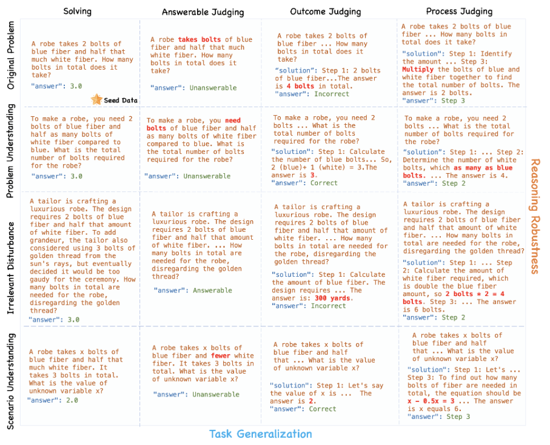

Math Problem Solving
PremiLab-Math is a sub-group of PremiLab at XJTLU, focusing on leveraging LLMs to solve mathematical problems, including Math Word Problems, Geometry Problems and Table Math Word Problems. We also investigate the interpretability of LLMs in math problem solving. Our group page is at PremiLab-Math.|
TeLL (AAAI 2025) |
GNS (AAAI 2025) |
 MathCheck (preprint) |